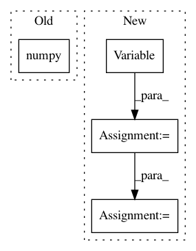

02ef279b852bad53771e02435d0caa0a64d17343,baseline/tf/classify/training/distributed.py,ClassifyTrainerDistributedTf,_test,#ClassifyTrainerDistributedTf#Any#Any#,142
Before Change
step_loss, step_batchsz, distributed_cm = _distributed_test_step(next(test_iter))
total_loss.assign_add(step_loss)
total_norm.assign_add(step_batchsz)
cm._cm += distributed_cm.numpy()
metrics = cm.get_all_metrics()
total_loss = total_loss.numpy()
total_norm = total_norm.numpy()
After Change
with strategy.scope():
total_loss = tf.Variable(0.0)
total_acc = tf.Variable(0.0)
total_norm = tf.Variable(0.0)
SET_TRAIN_FLAG(False)
test_iter = iter(loader)
for i in range(steps):
//step_loss, step_batchsz, distributed_cm = _distributed_test_step(next(test_iter))
step_loss, step_batchsz, distributed_acc = _distributed_test_step(next(test_iter))
total_loss.assign_add(step_loss)
total_norm.assign_add(step_batchsz)
total_acc.assign_add(distributed_acc)
//cm._cm += distributed_cm.numpy()
//metrics = cm.get_all_metrics()
total_loss = total_loss.numpy()
total_norm = total_norm.numpy()
total_acc = total_acc.numpy()
metrics = {}
metrics["avg_loss"] = total_loss / float(total_norm)
metrics["acc"] = total_acc / float(total_norm)
//verbose_output(verbose, cm)
return metrics
In pattern: SUPERPATTERN
Frequency: 3
Non-data size: 4
Instances
Project Name: dpressel/mead-baseline
Commit Name: 02ef279b852bad53771e02435d0caa0a64d17343
Time: 2020-09-02
Author: dpressel@gmail.com
File Name: baseline/tf/classify/training/distributed.py
Class Name: ClassifyTrainerDistributedTf
Method Name: _test
Project Name: jonas-koehler/s2cnn
Commit Name: 192e33a99505947aedd3dd8b081d71b04f14eb85
Time: 2017-10-30
Author: geiger.mario@gmail.com
File Name: examples/equivariance_error/main.py
Class Name:
Method Name:
Project Name: ClementPinard/FlowNetPytorch
Commit Name: c6a079c70368b41873f3288b05b74d38f74b6680
Time: 2018-03-30
Author: clement.pinard@parrot.com
File Name: run_inference.py
Class Name:
Method Name: main